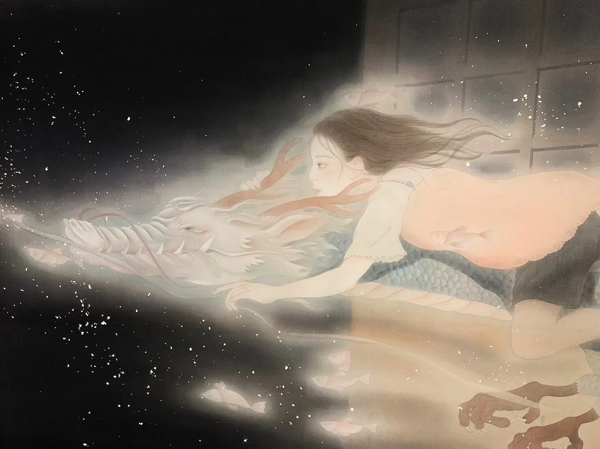
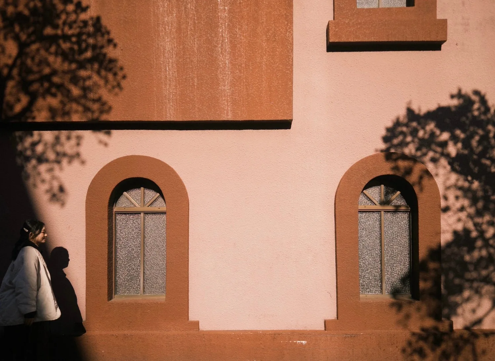
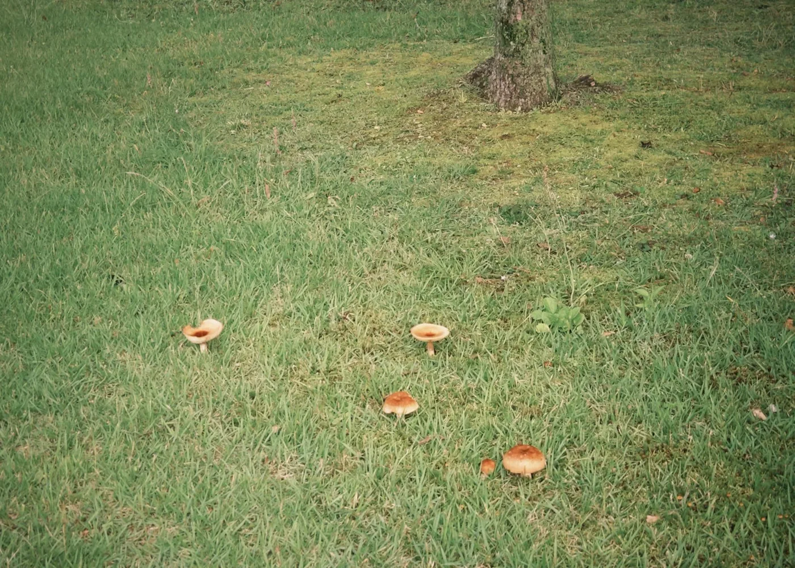

墨の向こう側、ひとつの世界。
視線所及，皆有故事
蔣哿恩
C H I A N G · K E E N
在墨色與光影之間，
收藏那些介於現實與想像的風景。
PAINTING / MIXED MEDIA / OBJECTSTAIWAN — JAPAN

WORK NO. 07〈雨にも負けず〉
PORTRAIT / KE EN CHIANG
01 / ABOUT THE ARTIST
關於 About
CHIANG KE EN
蔣哿恩（チャン・コーエン）
臺灣藝術創作者，畢業於國立臺灣藝術大學書畫藝術學系，於同系碩士班持續創作，並曾赴日本筑波大學交換研修。
作品運用水墨、礦物顏料、陶藝、玻璃與複合媒材，讓森林、雨、窗與旅途中的風景，交織成帶著一點魔法感的日常。
- 創作領域
- 水墨・墨彩・膠彩・複合媒材
- 學歷
- 國立臺灣藝術大學 書畫藝術學系
- 交流經驗
- 日本筑波大學交換研修（2026）
02 / EXHIBITIONS & RECOGNITION
創作足跡 Exhibitions & Awards
展出、交流與獲獎，
一筆一筆留下創作的軌跡。
A SELECTION OF EXHIBITIONS, AWARDS & ART FAIRS · 2022—2026
ことば / WORDS一頁來自作品集的低語
森に入り、光を追い、
ぬくもりを世界へ。
走進森林，追尋光，將溫暖帶往世界。
03 / CURATED WORKS
作品精選 Selected works
在幽暗、微光與奇想之間，
讓一幅畫成為另一個世界的入口。

旅の途中で
每一次出走，
都是另一場創作的開始。
04 / WORK ARCHIVE
作品全集 All works
典藏藝術家的創作足跡，
點選作品可查看材料、尺寸與細節。
— END OF WORK ARCHIVE —回到頂端 ↑
